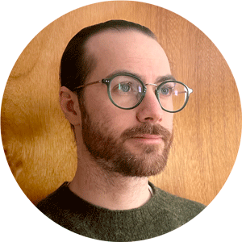

Hi, I'm Steve
I'm a product design team leader living rurally in Ontario, Canada.
What I'm up to
I currently lead the Product Design team at AudienceView creating robust solutions for the ticketing industry, both for venues/event creators and users/ticket buyers.
Bio
After practicing child and youth work in my first career, owning a contracting company in Vancouver, freelance designing in Toronto out of CSI Toronto and working with the wild team over at Elite Digital – I landed in design leadership at AudienceView.
What I do is create and support design teams to solve real problems and promote human centred design thinking across organizations.
Resumé
Product Design Team Lead
AudienceView
Mar 2019 - Present (3 years 1 month +)
Leading a team of product designers creating, testing and releasing updates and improvements toAudienceView's industry-leading ticketing software.
Senior Designer
Elite Digital
Mar 2017 - Mar 2019 (2 years 1 month)
Graphic and Web Designer
Elite Digital
Jun 2016 - Mar 2017 (10 months)
Freelance Graphic Designer
Sole Proprietor
Jan 2012 - Nov 2016 (4 years 11 months)
Worked freelance for many clients over the course of my design career.
Graphic Designer
Loop: Design for Social Good
Dec 2014 - Dec 2015 (1 year 1 month)
On contract to help design brand identities for various clients.
Owner/Founder
Black Triangle
Jan 2013 - Sep 2014 (1 year 9 months)
Owned and operated a small contracting company in Vancouver specializing in restaurant interiors.
Child And Youth Worker
Family Services of Greater Vancouver
Stephen White - page 1
Nov 2011 - Oct 2012 (1 year)
Led groups of youth with developmental disabilities on social activities to improve social skills and
general socialization.
Housing Worker
The Yonge Street Mission
Jun 2010 - Sep 2011 (1 year 4 months)
Provided housing support for street-involved youth in downtown Toronto including subsidized housing
and shelter referrals.
Education
Visual College of Art and Design
Graphic Design and Advertising, Graphic Design and Advertising
2012 - 2013
George Brown College
Child and Youth Worker, Social Work
2007 - 2010
Licenses & Certifications
Certified Scrum Product Owner (CSPO) - Scrum Alliance